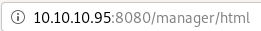
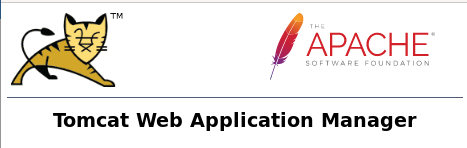
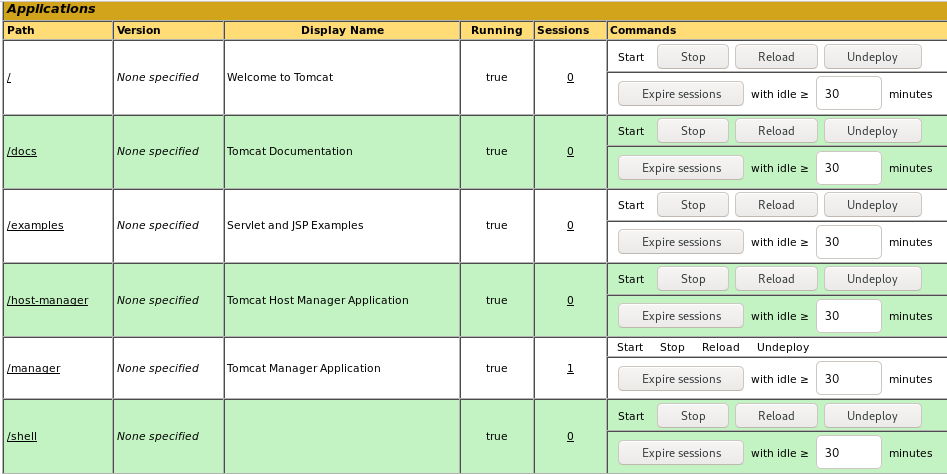
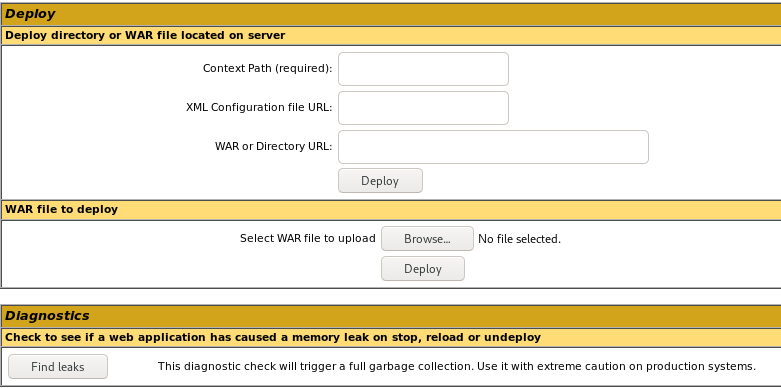

Windows Boxes
jerry
nmap
http
gobuster
/manager
passwordspray Tomcat server
default passwords
default passwords b64
Intruder
initial foothold
msfvenom .war reverse shell
.war upload and run
user/root
lessons learned
initial foothold
using username
tomcat
password
s3cret
on the manager login form
logs us into the
Tomcat Web Application Manager
!



